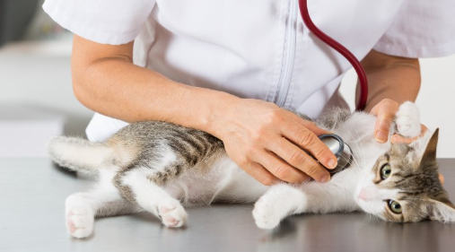

O café que faz o coração ronronar
Nossa missão é criar um espaço acolhedor e encantador onde os amantes de felinos possam desfrutar de momentos de paz e alegria, cercados por amigos peludos e uma xícara de café artesanal.
No Gatolatte, acreditamos que cada gato merece um lar cheio de carinho. Por isso, trabalhamos em parceria com abrigos locais para promover a adoção responsável, oferecendo aos nossos visitantes a oportunidade de conhecer e se apaixonar por gatos que estão à procura de uma família. Cada visita ao nosso café é uma chance de mudar a vida de um gatinho e de encontrar um novo amigo para a vida toda.
Parceria com ONG's
O Gatolatte colabora com ONG's locais dedicadas ao resgate e cuidado de gatos. Selecionamos parceiros que compartilham nossa missão de promover a adoção responsável e o bem-estar animal.
Lar temporário no gatil da cafeteria
Quando um gato é resgatado por uma ONG parceira, ele passa por uma avaliação veterinária completa, incluindo exames, vacinação e, se necessário, tratamento médico. Após a avaliação e tratamento, o gato é transferido para a Gatolatte, onde começa sua jornada em nosso lar temporário.
Adoção Responsável
Os visitantes da Gatolatte têm a oportunidade de interagir com os gatos disponíveis para adoção em um ambiente acolhedor e relaxante. Isso permite que os potenciais adotantes conheçam melhor os gatos e escolham aquele que mais se encaixa em seu estilo de vida. Interessados em adotar um gato passam por uma entrevista com nossa equipe e representantes da ONG parceira. Essa etapa é crucial para garantir que o adotante esteja preparado para assumir a responsabilidade de cuidar de um animal.
